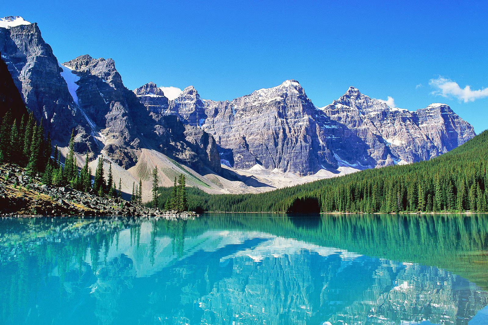
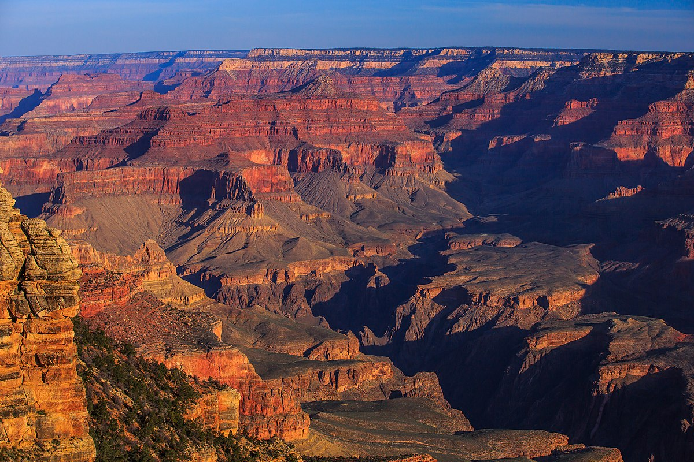

Kanada több mint 202 080 km hosszú partvonala három nagy óceánnal határos: az Atlanti-óceán északi részével, a Jeges-tengerrel és a Csendes-óceán északi részével.
A partvidék változatos tájai létfontosságú szerepet játszanak az ország természeti szépségében és gazdasági erejében, különösen az olyan ágazatokban, mint a halászat és a turizmus.

Brazília ad otthont a legnagyobb biológiai sokféleségnek.
A hatalmas brazíliai Amazonas esőerdő kulcsfontosságú globális ökológiai érték, amely a bolygó leggazdagabb biológiai sokféleségének ad otthont.
Ez az esőerdő több millió négyzetkilométeren terül el, és kulcsszerepet játszik az éghajlat szabályozásában és a fajok megőrzésében.
Az Egyesült Államokban 63 nemzeti park található.
Az amerikai nemzeti parkrendszer változatos ökoszisztémákat véd, a geotermikus jellemzőktől a kiterjedt kanyonokig.
Ezek a parkok nemcsak a természeti szépségeket őrzik, hanem tükrözik Amerika elkötelezettségét a környezetvédelem és a tájak nyilvános élvezete iránt.

Mexikó élénken ünnepli a halottak napját.
A halottak napja Mexikóban jelentős kulturális fesztivál, amelyet színes hagyományok és az elhunyt szeretteink tiszteletére rendezett rituálék jellemeznek.
Ez az ünnep az őslakos és a spanyol hatások egyedülálló keveréke, amely Mexikó gazdag kulturális örökségét tükrözi.